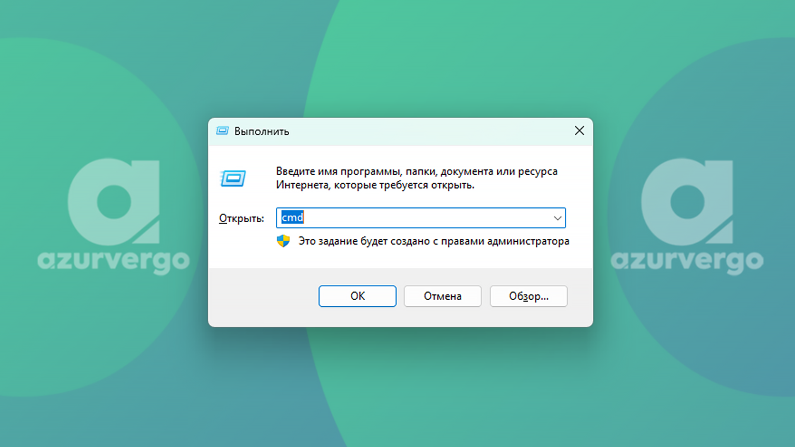
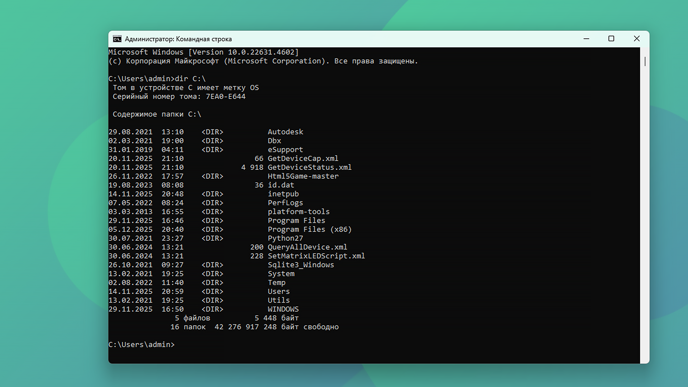
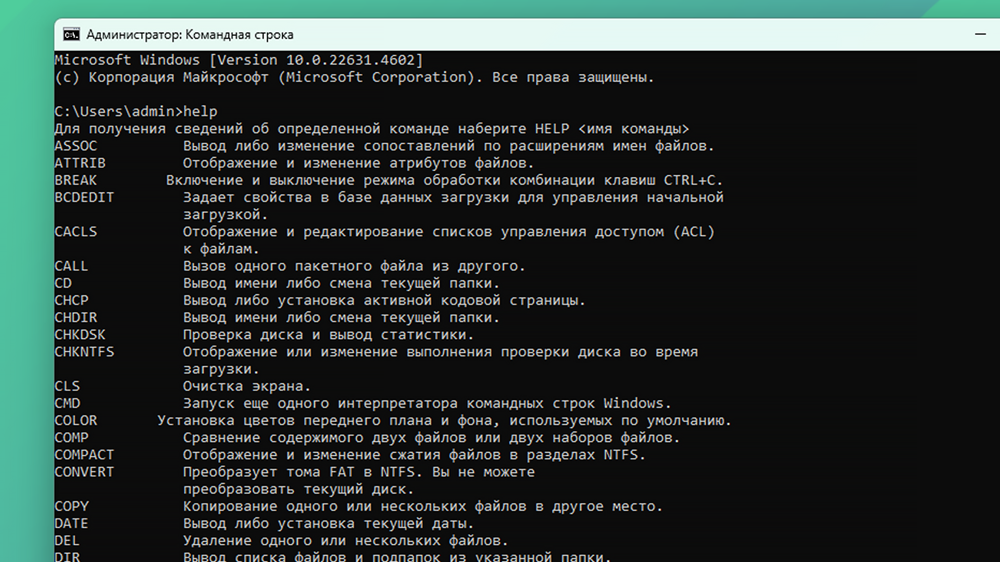
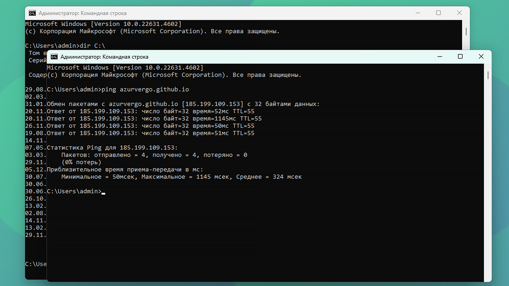

Командная строка CMD (Command Prompt) — это мощный инструмент, предоставляемый операционными системами Windows для взаимодействия с системой через текстовые команды. Несмотря на появление более современных оболочек вроде PowerShell и Windows Terminal, CMD остается важным инструментом для системных администраторов, разработчиков и опытных пользователей.
Что такое CMD и зачем он нужен?
CMD.exe — это интерпретатор командной строки для Windows, наследник легендарного COMMAND.COM из эпохи MS-DOS. Он позволяет выполнять широкий спектр задач: от управления файлами и каталогами до настройки сети и диагностики системы.
Основные преимущества использования командной строки:
- Автоматизация рутинных задач с помощью бат-файлов
- Более точный контроль над системными процессами
- Возможность удаленного администрирования
- Доступ к функциям, недоступным через графический интерфейс

Основные команды для работы с файлами и каталогами
Навигация по файловой системе
| Команда | Описание | Пример |
|---|---|---|
| cd | Сменить текущий каталог | cd C:\Users |
| dir | Показать содержимое каталога | dir /w |
| mkdir | Создать новый каталог | mkdir NewFolder |
| rmdir | Удалить каталог | rmdir OldFolder /s |
Операции с файлами
| Команда | Описание | Пример |
|---|---|---|
| copy | Копировать файлы | copy source.txt destination.txt |
| move | Переместить или переименовать файлы | move oldname.txt newname.txt |
| del | Удалить файлы | del file.txt |
| type | Показать содержимое файла | type document.txt |

Сетевые команды
Командная строка предоставляет мощные инструменты для работы с сетью:
# Проверить доступность ресурса с отправкой 4 пакетов
# Показать полную информацию о сетевых настройках
# Проследить маршрут пакетов до указанного хоста
# Показать все активные соединения и порты
Системные команды и утилиты
Управление процессами и службами
| Команда | Описание | Пример |
|---|---|---|
| tasklist | Показать список запущенных процессов | tasklist /svc |
| taskkill | Завершить процесс | taskkill /im notepad.exe |
| sc | Управление службами Windows | sc query |
| shutdown | Выключение или перезагрузка | shutdown /r /t 0 |

Полезные команды для диагностики
# Получить полную информацию о системе
# Проверить и исправить ошибки на диске C:
# Проверить и восстановить системные файлы
# Управление дисками и разделами
Команды для работы с пользователями
# Показать список пользователей
# Показать членов группы администраторов
# Показать текущего пользователя
Продвинутые возможности CMD
Перенаправление ввода-вывода
Одна из самых мощных функций CMD — возможность перенаправления:
# Сохранить вывод команды в файл
# Добавить содержимое file1.txt в конец file2.txt
# Передать вывод command1 на вход command2
Пакетные файлы (.bat)
BAT-файлы позволяют автоматизировать последовательности команд:
title Backup Script
echo Starting backup...
xcopy C:\Data D:\Backup /E /I /Y
echo Backup completed!
pause

Полезные горячие клавиши в CMD
- F7 — История команд
- Tab — Автодополнение путей и файлов
- Ctrl + C — Прервать выполнение команды
- Ctrl + V — Вставить текст (в Windows 10+)
- Стрелки вверх/вниз — Навигация по истории команд
Безопасность и CMD
При работе с командной строкой важно помнить о безопасности:
- Запускайте CMD с минимальными необходимыми правами
- Проверяйте команды перед выполнением, особенно скачанные из интернета
- Используйте RunAs для выполнения команд от имени другого пользователя
- Будьте осторожны с командами, изменяющими системные настройки
CMD vs PowerShell
Хотя CMD остается полезным инструментом, Microsoft рекомендует использовать PowerShell для сложных задач администрирования. PowerShell предлагает:
- Более современный и мощный синтаксис
- Объектно-ориентированный подход
- Интеграцию с .NET Framework
- Расширенные возможности для автоматизации
Дополнительные ресурсы
Для получения полной и актуальной информации о всех командах CMD рекомендуем обратиться к официальной документации Microsoft:
Официальная документация по командам CMD на Microsoft LearnНа этом ресурсе вы найдете:
- Полный список всех команд CMD с подробным описанием
- Синтаксис и параметры для каждой команды
- Примеры использования и лучшие практики
- Информацию о совместимости с разными версиями Windows
Заключение
Командная строка CMD — это мощный инструмент, который, несмотря на свой возраст, продолжает оставаться полезным для решения множества задач. Освоение основных команд CMD поможет вам лучше понимать работу Windows, автоматизировать рутинные задачи и эффективно решать проблемы с системой.
Начните с основных команд для работы с файлами, постепенно осваивайте сетевые утилиты и системные команды. Помните, что практика — лучший способ закрепить знания. Создавайте простые BAT-файлы для автоматизации своих задач и постепенно усложняйте их.